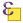

Přidání a export dat¶
V této kapitole je popsán postup přidání a exportu vektorových dat. Obecný princip přidávání a exportu dat v QGIS najdeme v kapitole Přidávání a export geodat. Pro čtení a zápis vektorových formátů používá QGIS knihovnu GDAL.
Tip
V režimu čtení lze vektorová data také načíst přímo z archivu zip a gzip.
Přidávání vektorových dat¶
Nabídka pro načtení vektorové vrstvy se aktivuje v záložce , ikonou přidání vektorové vrstvy nebo pomocí klávesové zkratky Ctrl+Shift+V.
{kind=link}
Obr. 53 Dialogové okno přidání vektorové vrstvy.¶
Nejčastější volbou vkládání dat je soubor nebo adresář. Vložení jedné
vrstvy je možné označením Typ zdroje - 
Soubor. Kliknutím na tlačítko Procházet se otevře
navigační okno s možností vybrat soubor s vektorovými daty. Po
potvrzení se označená vrstva načte do mapového okna.
Volba Adresář umožňuje označit složku, ve které se nachází vektorová data. Potvrzením tlačítkem Otevřít QGIS připraví všechna dostupná data uložená ve složce k načtení. Objeví se potvrzující okno se všemi dostupnými vrstvami. Vrstvy lze buď označit všechny, nebo podržením klávesy Ctrl vybrat jen požadované vrstvy (Obr. 54). Další možností je přidat data pomocí vestavěného datového katalogu (prohlížeče souborů) viz kapitola Přidávání dat.
Obr. 54 Výběr jednotlivých vrstev při přidávání vektorových vrstev ze složky.¶
Export vektorových dat¶
Pravým kliknutím na vrstvu vyvoláme kontextové menu, vybereme možnost
a zadáme parametry exportu.
Můžeme zde zvolit výstupní formát (např. *.kml, *.shp, *.gpx),
souřadnicový systém vrstvy a další volitelné parametry.
Obr. 55 Okno exportu vektorové vrstvy.¶
Pokud potřebujeme exportovat pouze část prvků vrstvy nebo
konkrétní zájmové prvky, musíme tyto prvky nejprve označit
výběrem (např. Vybrat prvky oblastí
nebo jednoklikem nebo  Vabrat prvky
pomocí vzorce). Potom se nám v okně exportu aktivuje možnost
Uložit pouze vybrané prvky, nebo pro export použijeme
druhou volbu z kontextového menu
{kind=link}
{kind=link}
Tip
Pro uložení pouze atributové tabulky vrstvy lze zvolit
výstupní formát *.csv.